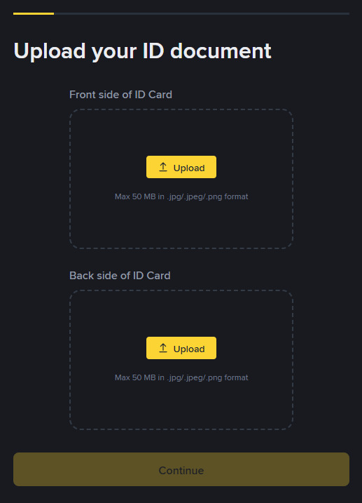
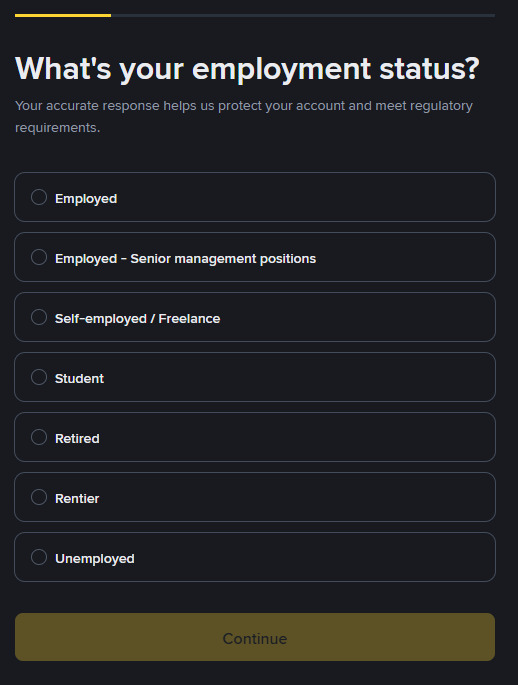
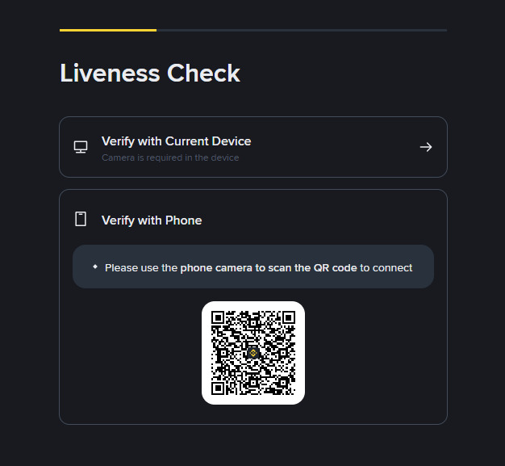
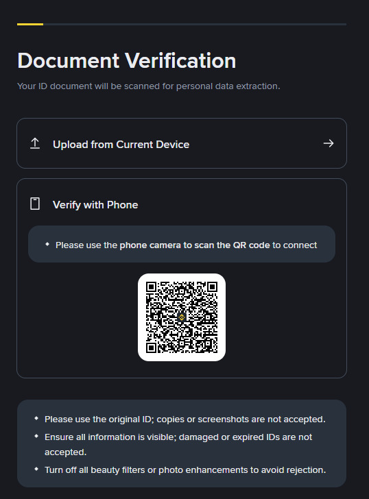
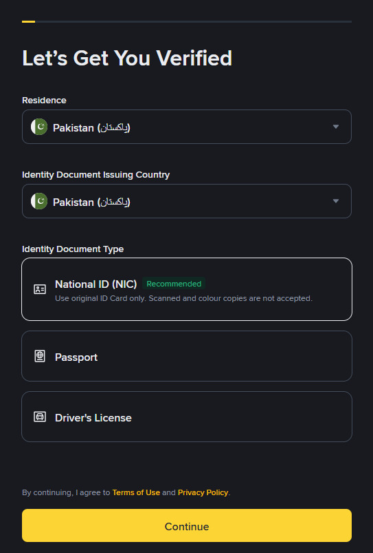

KYC (Know Your Customer) ایکسچینج کے لیے قانونی تقاضا ہے — مگر یہ آپ کے اکاؤنٹ کی چابی بھی ہے۔ بغیر KYC کے زیادہ تر فیچرز بند رہتے ہیں۔ اس باب میں آپ مکمل KYC طریقہ، تصدیق کے درجے، رد ہونے کے اسباب اور ان کے حل سمجھیں گے۔

KYC کا مطلب ہے Know Your Customer — یعنی "اپنے صارف کو پہچانیں"۔
بائننس آپ سے پوچھتا ہے: "آپ واقعی کون ہیں؟" — اور آپ کو اپنی شناخت ثابت کرنی پڑتی ہے۔ یہ پاسپورٹ/شناختی کارڈ دکھانے کے برابر ہے، مگر ڈیجیٹل طریقے سے۔
| وجہ | وضاحت |
|---|---|
| قانونی تقاضا | دنیا بھر میں ایکسچینجز کو صارفین کی تصدیق لازمی ہے (AML/CFT قوانین) |
| منی لانڈرنگ روکنا | تاکہ کالا پیسہ کرپٹو میں نہ بدلا جائے (Anti-Money Laundering) |
| تھراہ فنانسنگ روکنا | terrorist فنانسنگ کو روکنے کے بین الاقوامی قوانین (CFT) |
| سیکیورٹی | تصدیق شدہ اکاؤنٹ آسانی سے ہائی جیک نہیں ہوتا |
| اعتماد و استحکام | ایکسچینج ریگولیٹرز کے سامنے جوابدہ رہتی ہے |
| حدود | بغیر KYC کے ڈپازٹ/وِڈراول کی حد بہت کم ہوتی ہے |
💡 سمجھیں: KYC صرف آپ کی نہیں، سب کی حفاظت ہے۔ اگر کوئی ایکسچینج کالے پیسے کو کرپٹو میں بدلنے دے، تو وہ ریگولیٹرز کی نظر میں آتی ہے — اور پھر آپ کا پیسہ بھی خطرے میں پڑتا ہے۔
| فیچر | بغیر تصدیق | مکمل تصدیق کے ساتھ |
|---|---|---|
| کرپٹو ڈپازٹ | محدود | ✅ وسیع حد |
| کرپٹو وِڈراول | ❌/محدود | ✅ مکمل |
| فیئٹ ڈپازٹ | ❌ | ✅ (جہاں دستیاب) |
| اسپاٹ ٹریڈنگ | محدود | ✅ مکمل |
| فیوچرز | ❌ | ✅ |
| Earn / Launchpad | ❌ | ✅ |
| P2P | محدود | ✅ مکمل |
| API | ❌ | ✅ |
⚠️ خلاصہ: بغیر KYC کے آپ عملی طور پر صرف دیکھ سکتے ہیں۔ خرید و فروخت، نکالنا، کمائی — سب کے لیے KYC درکار ہے۔
بائننس کے تصدیقی درجات عام طور پر یہ ہیں (فیچر اور ملک کے مطابق تھوڑا تبدل ممکن ہے):
| پہلو | درجہ 0 | درجہ 1 (Verified) | درجہ 2 (Verified Plus) |
|---|---|---|---|
| دستاویز | ❌ | ID + سیلفی | ID + سیلفی + پتہ |
| کرپٹو وِڈراول | محدود | ✅ مکمل | ✅ مکمل |
| فیئٹ | ❌ | محدود | ✅ وسیع |
| فیوچرز | ❌ | ✅ | ✅ |
| وقت | فوری | منٹ سے گھنٹے | گھنٹے سے دن |
⚠️ نوٹ: مختلف ملکوں میں درجات کی ترتیب اور حدود مختلف ہو سکتی ہیں۔ تصدیق کے صفحات پر موجودہ تقاضے ہمیشہ دیکھیں۔
Profile (پروفائل) → User Center → Identificationیہاں آپ کو اپنا موجودہ درجہ اور اگلا درجہ کے تقاضے دکھائی دیں گے۔

| دستاویز | ضرورت | نوٹ |
|---|---|---|
| CNIC (شناختی کارڈ) | ✅ لازمی | آگے اور پیچھے دونوں اطراف |
| سیلفی / Liveness | ✅ لازمی | واضح، براہ راست، کوئی فلٹر نہیں |
| پتہ (Address Proof) | درجہ 2 کے لیے | یوٹیلیٹی بل، بینک اسٹیٹمنٹ |
| پاسپورٹ | متبادل | بعض صورتوں میں ID کی جگہ |
| ڈرائیونگ لائسنس | متبادل | بعض اوقات |
| قاعدہ | وضاحت |
|---|---|
| نام = CNIC | جیسا نام CNIC پر ہے، ویسا ہی بائننس اکاؤنٹ میں ہونا چاہیے |
| صاف تصویر | دستاویز کے چاروں کونے نظر آئیں، دھندلا پن نہ ہو |
| درست دستاویز | میعاد ختم یا خراب دستاویز قبول نہیں |
| روشنی | بغیر چمک (Glare)، بغیر سائے |
| اصل دستاویز | اسکرین شاٹ/کاپی کی تصویر قبول نہیں |
بائننس Financial Action Task Force (FATF) کے اصولوں پر عمل کرتا ہے۔ اس لیے وہ جاننا چاہتا ہے:
💡 یہ ڈرائیو نہیں: یہ معلومات صرف قانونی ریکارڈ کے لیے ہیں۔ آپ کی آمدنی پر کوئی ٹیکس نہیں لگتا — یہ صرف "Source of Funds" (پیسے کا ذریعہ) کا ثبوت ہے۔
www.binance.com → LoginUser Center → Identification → Verify Now / Get StartedCountry: Pakistan 🇵🇰
ID Type: National ID Card (CNIC) یا Passport⚠️ وہی ملک منتخب کریں جہاں آپ کا اصل رہائش ہے — VPN استعمال نہ کریں۔ غلط ملک = KYC رد ہونا یقینی۔
CNIC Number: 12345-1234567-1 (13 ہندسے)💡 CNIC نمبر دلائل سے درست لکھیں۔ اگر غلط ہو گیا تو تصدیق رد ہو جائے گی۔
CNIC کے آگے اور پیچھے دونوں طرف کی واضح تصاویر لیں:
| کریں ✅ | نہ کریں ❌ |
|---|---|
| سیدھی، صاف تصویر | زاویہ/ٹیڑھی تصویر |
| روشن جگہ | اندھیری جگہ |
| مکمل دستاویز (چاروں کونے) | کٹی ہوئی تصویر |
| اصل دستاویز | اسکرین/کاپی کی تصویر |
| بغیر چمک (no glare) | فلش کی چمک |

یہ سب سے نازک حصہ ہے۔ اگر یہ رد ہو جائے تو KYC رک جاتی ہے۔
درست طریقہ:
یہ نہ کریں:

| صورتحال | وقت |
|---|---|
| خودکار (AI) جانچ | چند منٹ سے چند گھنٹے |
| دستی (Manual) جانچ | چند گھنٹے سے 1 دن |
| مشکل/بھاری رش | 24-48 گھنٹے |

✅ کامیابی کے بعد: اب آپ P2P، Earn، Futures، Launchpad — سب استعمال کر سکتے ہیں۔
⚠️ اگر CNIC پر نام اور بائننس اکاؤنٹ کے نام میں فرق ہو — KYC رد ہو جائے گی۔ یہ سب سے عام وجہ ہے جس کی وجہ سے تصدیق نہیں ہوتی۔
| CNIC پر نام | اکاؤنٹ میں نام | نتیجہ |
|---|---|---|
| احمد خان | احمد خان | ✅ منظور |
| احمد خان | Ahmad Khan | ⚠️ اکثر منظور (رومن املاء) |
| احمد خان | Ahmad | ❌ رد — ادھورا نام |
| احمد خان | احمد حسین | ❌ رد — مختلف نام |
| احمد خان | Ahmed Ali Khan | ⚠️ ممکنہ رد — والد کا نام اضافی |
| احمد خان | Ahmed Khan | ✅ عام طور پر منظور |
💡 پیشہ ورانہ مشورہ: رجسٹریشن کے وقت ہی اپنا CNIC والا مکمل نام استعمال کریں۔ عرفیتی نام (nicknames) بعد میں درد سر بنتے ہیں۔
| مسئلہ | ممکنہ سبب | حل |
|---|---|---|
| سیلفی رد | دھندلا پن، فلٹر، اندھیرا | صاف روشنی میں دوبارہ لیں |
| نام نہیں ملا | CNIC اور اکاؤنٹ میں فرق | نام درست کریں |
| CNIC نمبر غلط | ہندسوں کی غلطی | دوبارہ چیک کر کے درج کریں |
| دستاویز غیر واضح | ٹیڑھی/دھندلی تصویر | نئے سرے سے صاف تصویر |
| دستاویز میعاد ختم | پرانی ID | درست دستاویز استعمال کریں |
| تاخیر | بھاری رش | صبر — 24-48 گھنٹے |
| "Duplicate Account" | پہلے سے اکاؤنٹ موجود | سپورٹ سے رجوع کریں |
| ملک کا مسئلہ | VPN یا غلط ملک | اپنا اصلی ملک استعمال کریں |
| عمر کا مسئلہ | 18 سال سے کم | 18 سال کے بعد کوشش کریں |
⚠️ یہ ہرگز نہ کریں: کسی اور کا نام/CNIC لگوانا، جعلی دستاویز، یا امیج ایڈیٹنگ (Photoshop) — یہ اکاؤنٹ کی مستقل بندش کا سبب بنتا ہے، اور ممکنہ قانونی کارروائی کا باعث بن سکتا ہے۔
| نکتہ | صورتحال |
|---|---|
| CNIC سے KYC | ✅ مکمل ہو سکتی ہے |
| سیلفی/Liveness | ✅ لازمی مرحلہ |
| فیئٹ ڈیپازٹ | عام طور پر P2P کے ذریعے (باب 12) |
| قانونی حیثیت | زیر بحث — قوانین بدلتے رہتے ہیں |
| ایک شخص، ایک اکاؤنٹ | ✅ بائننس کی پالیسی |
| عمر | 18+ لازمی |
| آپ کی صورتحال | لکھیں |
|---|---|
| نوکری کرتے ہیں | Employment / Salary |
| کاروبار | Business / Self-employed |
| فری لانس / آن لائن | Freelance / Remote work |
| طالب علم | Student (خاندان سے مدد) |
| پنسن | Retired / Pension |
| سرمایہ کاری | Investment / Savings |
💡 سچ لکھیں — یہ معلومات بعد میں دستاویز کے طور پر مانگی جا سکتی ہیں (بڑی لین دین پر)۔ جھوٹا ذریعہ = اکاؤنٹ بند۔
💡 ٹیکس اور قانون: جہاں قانون آپ کے علاقے میں کرپٹو کو ریگولیٹ کرتا ہے، وہاں عوامی ریکارڈ اور ٹیکس (FBR) کی ذمہ داریاں بھی لاگو ہو سکتی ہیں۔ یہ کتاب صرف تعلیمی ہے، قانونی مشورہ نہیں۔ اپنے علاقے کے قوانین کے لیے ماہر سے مشورہ کریں۔
KYC ایک رکاوٹ نہیں — ایک دروازہ ہے۔ جو اسے سمجھ کر کھول لے، اس کے لیے بائننس کے تمام دروازے کھل جاتے ہیں۔ سچے کاغذات، صاف تصویریں، اور درست نام — یہ تین چیزیں ہمیشہ یاد رکھیں۔
اور یہ کہ ایک شخص = ایک اکاؤنٹ۔ دوسروں کے لیے اپنا اکاؤنٹ بنانا یا کسی اور کا نام استعمال کرنا — یہ نہ صرف اکاؤنٹ کی بندش کا باعث بنتا ہے، بلکہ آپ کے اپنے پیسوں کو بھی خطرے میں ڈالتا ہے۔